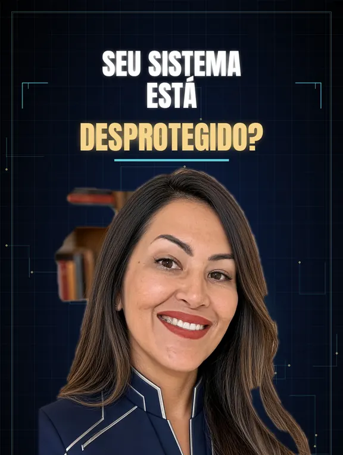
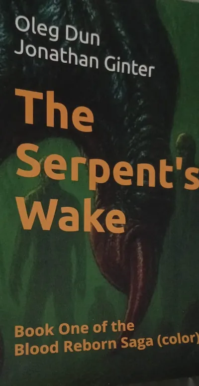
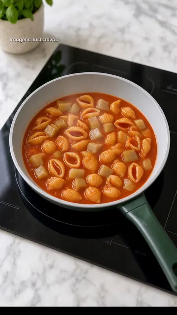
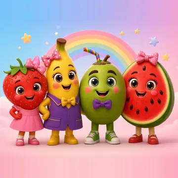
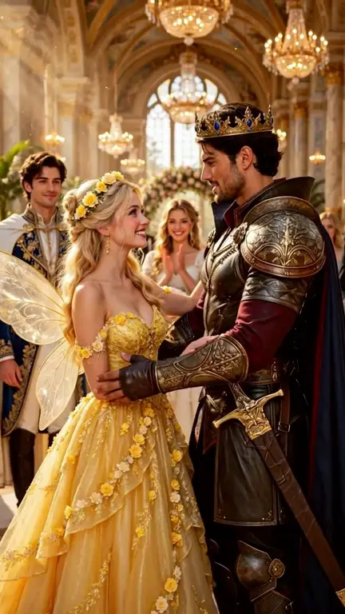
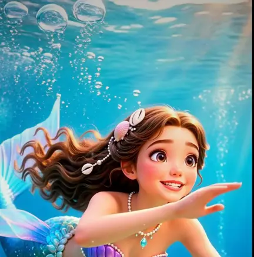
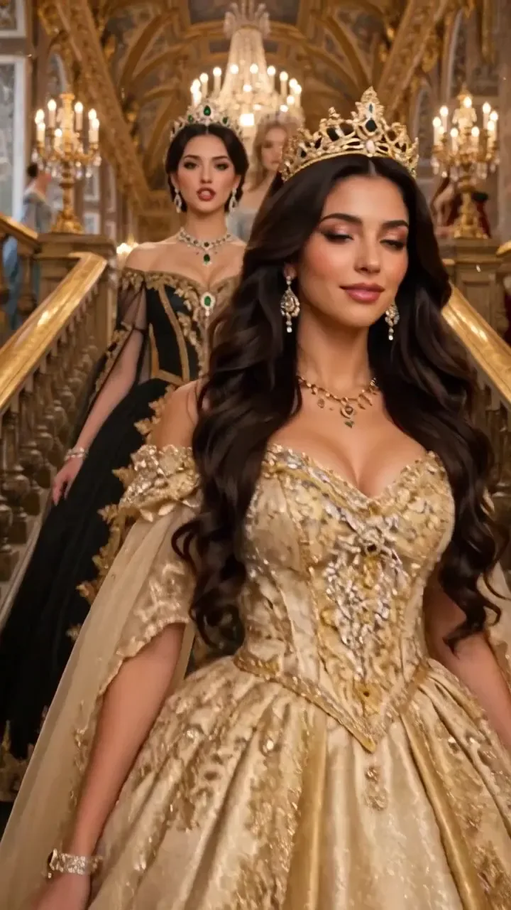
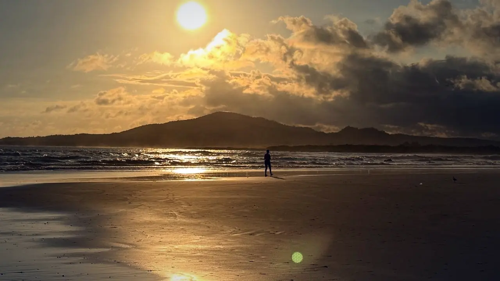
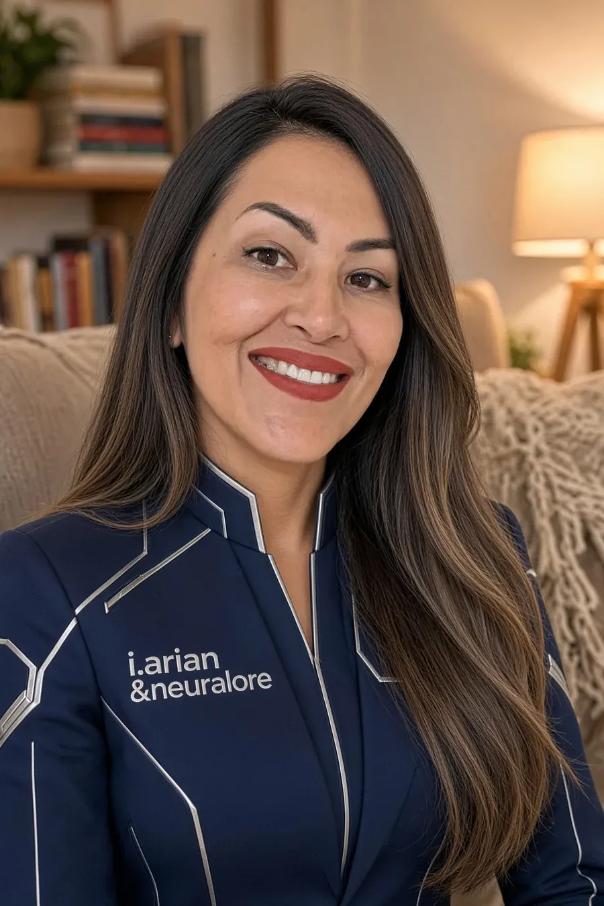

Inteligência artificial que trabalha. Imagem que convence.
A I.ARIAN coloca equipes de agentes de IA para trabalhar na sua empresa. A NEURALLOREE Filmes cria filmes, avatares e campanhas com inteligência artificial. E, com curadoria direta em Bali, abrimos uma ponte de importação entre a Indonésia e o Brasil.
Automação para empresa e rotina. A I.ARIAN implanta equipes de agentes de inteligência artificial que executam tarefas reais — e encaminham à sua equipe o que pede julgamento humano.
Nós trabalhamos assim todos os dias: a nossa própria operação roda com agentes especializados. É essa experiência que levamos para a sua empresa.
Sua equipe de IA
Agenda e e-mailAtendimento no WhatsAppFinanceiroImagensTrilha e áudioProspecçãoProjetos
Atender→Agendar→Confirmar→Equipe humana
WhatsApp pela API oficial da Meta e automações em n8n.
01
Implantação
Mapeamos processos, desenhamos os agentes, integramos às suas ferramentas e testamos antes de entrar no ar.
Premium
Seu Jarvis pessoal
No pacote Premium, além da equipe da empresa, você recebe uma secretária de IA própria para e-mail, agenda e rotina — a mesma lógica que usamos internamente.
03
Acompanhamento
Ajustes, relatórios e evolução contínua. Os agentes ajudam; quem decide é você.

Capa do nosso reel educativo sobre segurança digital.
Segurança e LGPD
Implantamos IA com segurança.
Criminosos também usam inteligência artificial. Por isso, cada projeto nasce com proteção desde o primeiro dia:
Menor acesso possível para cada agente
Verificação em duas etapas e cofre de senhas
Atualizações rápidas e nada de plugin desconhecido
Cópias de segurança e registro do que cada agente faz
Dados sob o controle de quem contrata, conforme a LGPD (Lei 13.709/2018), e sem uso para treinar modelos públicos
Para clínicas e consultórios
Rigor de saúde. Sem promessas milagrosas.
Agentes que atendem, agendam, confirmam e lembram retornos — e que nunca diagnosticam, prescrevem ou orientam tratamento. Toda dúvida clínica vai direto para a equipe da casa.
Dados de saúde tratados como dados sensíveis (LGPD, art. 11)
Comunicação dentro das regras de publicidade médica do CFM
Sem antes e depois, sem garantia de resultado, sem sensacionalismo
Registro do que o agente responde e revisão periódica
NEURALLOREE Filmes
Filmes com inteligência artificial, para qualquer segmento.
NEURALLOREEFILMES · SE
Direção com formação em iluminação para fotografia e vídeo em Dublin (Irlanda).
imagem ilustrativaAtores e avatares de IA: porta-vozes digitais para treinamentos e campanhas.
Comerciais e institucionais
Do roteiro ao filme final, para a marca, o produto ou o serviço — em qualquer tema do seu segmento.
Atores e avatares de IA
Porta-vozes digitais para treinamentos, apresentações e campanhas, sempre identificados como conteúdo de IA.
Drones DJI com ActiveTrack
Tomadas aéreas que acompanham pessoas e veículos: obras, empreendimentos e lançamentos imobiliários.
Conteúdo vertical
Reels, Shorts e Status em 9:16, com legenda palavra a palavra e áudio no padrão das plataformas.
Do storyboard à entrega
Briefing
Roteiro
Storyboard
Geração e captação
Edição, trilha e voz
Revisão humana
Entrega
Cenas geradas por IA saem com o selo “imagens ilustrativas”. Texto na tela é sempre composto por código, sem letras deformadas.

Imagem ilustrativa · cenas geradas por IA
BLOOD REBORN: The Serpent’s Wake
Livro de quase 500 páginas sobre mitos folclóricos e a história da Ucrânia, com cenas em IA fiéis ao texto (imagens e vídeos).
Engenharia de imagem da saga BLOOD REBORN no mundo: NEURALLOREE
Trechos e capas de entregas nossas. Deslize para ver mais.
imagem ilustrativa
Atores de IA em cena
Filme de época com atores digitais.
imagem ilustrativa
Sereias e princesas
Filme personalizado para crianças.
imagem ilustrativa
Avatar porta-voz
Apresentadora digital para treinamentos.
Reel de segurança
Conteúdo educativo vertical com legendas palavra a palavra.
imagem ilustrativa
“Seu filho virou princesa?”
Capa de campanha de filmes personalizados.

imagem ilustrativa
Reels de receitas
Série vertical com cenas de IA.

imagem ilustrativa
Série infantil
Personagens originais para vídeos infantis.


Filmes e livros personalizados
Quando a estrela da história é quem você ama.

Filmes de princesas e sereias — a criança da família é a protagonistaimagem ilustrativaLivros infantis publicados na Amazon (KDP)imagem ilustrativaÁlbuns personalizados para festas e datas especiaisimagem ilustrativa
Fotos usadas apenas para o pedido e excluídas após a entrega, conforme a LGPD.
imagem ilustrativa
Nova frente de negócios
Importação Indonésia–Brasil · curadoria direta em Bali
Cafés especiais, cacau, iguarias, mobiliário, arte e artesanato. Somos representantes de importação de produtores de café e cacau de Bali no Brasil, com curadoria direta em Ubud. Uma rede de fornecedores construída a partir de vivência local, com seleção direta e acompanhamento de cada pedido até o Brasil.
Experiência Bali · café e cacau
Do vulcão à xícara: uma experiência sensorial de Bali.
Os cafés e os cacaus de Bali nascem de paisagens que se leem no sabor: solo vulcânico, altitude, terraços cultivados à mão. Queremos trazer essa experiência, inteira, para o Brasil.

Bali, no fim da tarde: de onde vem a nossa curadoria.
I
Terroir vulcânico
Nas terras altas de Kintamani, em volta do Monte Batur, o café cresce em solo vulcânico e em altitude, com clima fresco e luz intensa. É a base de perfis que costumam ser descritos como limpos e cítricos.
II
Terraços de Ubud
Entre arrozais em degraus e floresta, o cultivo de café e de cacau segue, em geral, em pequena escala e com mão de obra artesanal: colheita seletiva, fermentação e secagem acompanhadas de perto.
III
Notas de degustação
Perfis geralmente descritos para a região. A prova de amostras é combinada em cada pedido.
Cada lote chega com a sua história: de onde veio, quem plantou, como foi processado. Contamos essa trajetória ao comprador brasileiro, sem exageros e sem prometer o que não podemos comprovar.
Entendemos a empresa, o objetivo, o prazo e as regras do seu setor.
02
Proposta
Desenhamos a solução — agentes, filme ou importação — com escopo e etapas por escrito.
03
Produção
Agentes configurados e testados, filmes roteirizados e revisados, cargas conferidas na origem.
04
Conformidade
Regras de cada setor e documentação: checamos antes, não depois.
05
Entrega e acompanhamento
Colocamos no ar, entregamos na porta e seguimos ao seu lado.
Nós orientamos e executamos. Você toma a decisão comercial.
Estrutura
Equipamento de ponta, a serviço do projeto.
Mac M5
Edição, finalização e IA local com folga de desempenho.
Drones DJI
Captação aérea com ActiveTrack para obras e empreendimentos.
Projetor 4K
Apresentações e exibições em tela grande, com áudio JBL.
Tradução em 200 idiomas
Fones tradutores para reuniões internacionais em 200 idiomas e dialetos.

Quem lidera
Carla Mecenas
CEO · I.ARIAN & NEURALLOREE Filmes
À frente das duas empresas, Carla une visão internacional e base em Aracaju para levar automação, inteligência artificial e produção audiovisual a empresas de todo o Brasil.
Na prática, ela trabalha todos os dias com a própria equipe de agentes de IA — e é essa rotina, testada no dia a dia, que serve de modelo para cada projeto entregue.
Não. Eles cuidam do repetitivo — atender, agendar, confirmar, organizar — e encaminham para pessoas tudo o que pede julgamento. Quem decide continua sendo a sua equipe.
Como os dados da minha empresa são protegidos?
Os dados ficam sob o controle de quem contrata, com acesso mínimo para cada agente, verificação em duas etapas, cofre de senhas e cópias de segurança, conforme a LGPD. Não usamos esses dados para treinar modelos públicos.
O que é o Jarvis pessoal do pacote Premium?
Uma secretária de IA exclusiva para você: organiza e-mails, agenda e lembretes da sua rotina, além da equipe de agentes da empresa.
Vocês atendem fora de Aracaju?
Sim. Agentes, filmes e conteúdos digitais são entregues em todo o Brasil; captação com drone é combinada conforme o local.
Os filmes deixam claro que usam IA?
Sim. Cenas geradas por inteligência artificial levam o selo “imagens ilustrativas”, e todo material passa por revisão humana antes da entrega.
Vocês informam preços pelo site?
Não. Cada projeto e cada operação de importação tem escopo próprio. Os valores são apresentados em proposta, depois da reunião.
O que vocês importam da Indonésia?
Trabalhamos com curadoria direta em Bali em cinco segmentos: cafés especiais, cacau, iguarias, mobiliário e arte e artesanato. A disponibilidade é confirmada por pedido, e a conformidade regulatória é conduzida caso a caso.
Pessoas que decidem. Agentes que executam. Filmes que convencem.